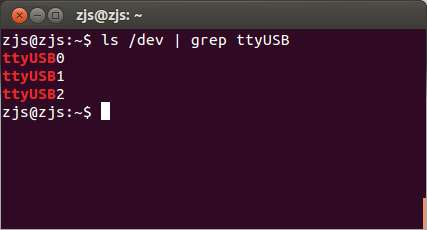
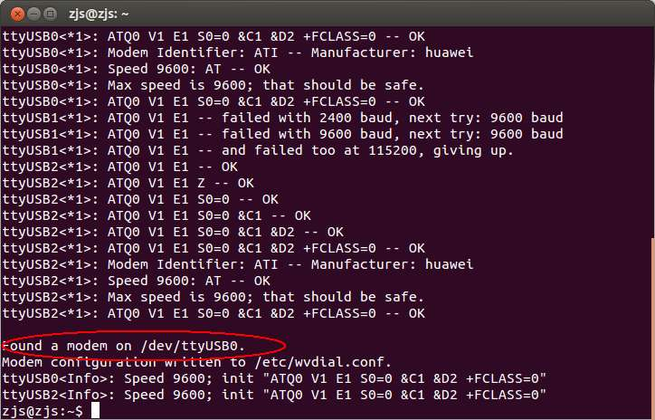
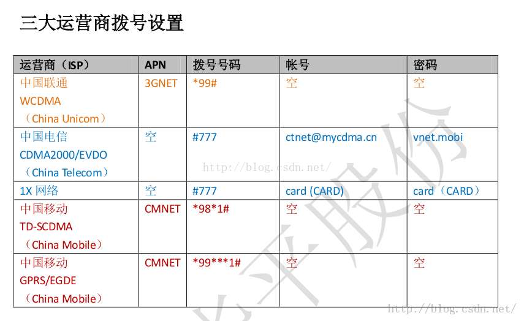
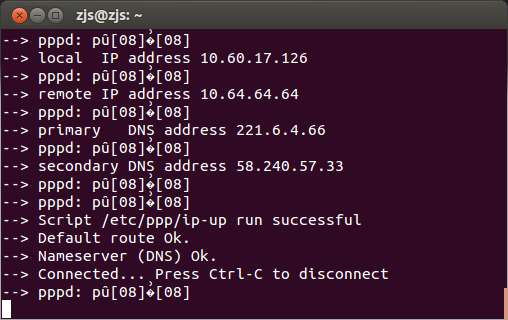
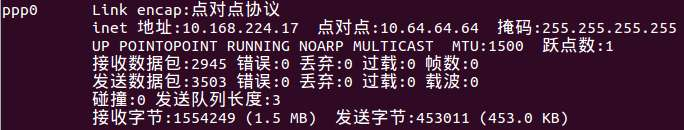
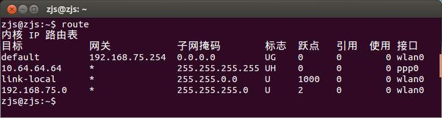
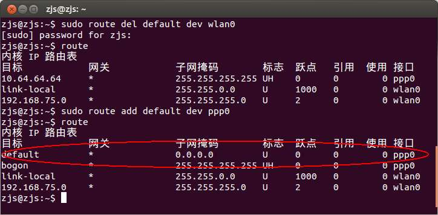

项目需要使用到实时在线的数据信道，那么很自然地想到使用手机网络。一开始不太了解，使用了GPRS。后来才知道GPRS属于2G时代的产物，带宽只有1kbps，完全不够用。另外，大多数GPRS模块都是使用内置的TCP/IP协议栈，同时只能进行有限个TCP连接，而且还不能发送IP包，限制了应用。
于是后来又去找3G模块。可是呢，那些串口操作、使用AT指令的3G模块动不动就三四百，不仅价格贵，而且还需要自己写代码操作AT。后来，我偶然间想到了USB上网卡！不是那种WiFi网卡，是那种插入sim卡使用流量上网的USB上网卡，就像这样的：
首先看价格，90~150不等，便宜很多（如果买二手的USB 3G模块，会更加便宜）。其次看软件支持，发现网上有很多教程，而且配置不复杂，通常linux都可以驱动。最后看功能，这种网卡可以被linux识别为一个网络设备，加载成功以后会出现一个ppp0网络接口，那么可以像一般的网卡一样收发任意数据包，自然也可以使用linux各种强大的网络功能了。
看来果然是要尽量使用大众化的产品，这样不仅因为竞争而价格低廉，而且各种软件支持也很好，资料也多～～
当然，另外一个好处就是，不管使用什么型号的USB上网卡，只要能够被Linux识别，那么对上层软件都是透明的，不需要修改。我目前在Ubuntu12.04和raspbian jessie上试过华为的E1750（联通3G模块）、华为EC1261（电信3G模块）。
接下来我以华为E1750（联通3G模块）为例，一步一步地让Linux支持USB 3G上网卡吧～
一、下载wvdial：
sudo apt-get install wvdial
二、把SIM卡插入E1750，然后把E1750插入USB口，然后查看Linux是否能够识别：
ls /dev | grep ttyUSB
如果系统多出来了一个或多个ttyUSBx，那么应该就是识别出来了：

三、使用wvdialconf自动探测模块：
sudo wvdialconf

正常的话会输出“Found a modem on /dev/ttyUSB0”，此时，最基本的配置文件已经被写到/etc/wvdial.conf里了。
四、手动编辑/etc/wvdial.conf：
sudo nano /etc/wvdial.conf
我这里用了nano，也可以用任何文本编辑器。可以看到自动产生的配置文件内容是这样的：
[Dialer Defaults] Init2 = ATQ0 V1 E1 S0=0 &C1 &D2 +FCLASS=0 Modem Type = Analog Modem ; Phone = <Target Phone Number> ISDN = 0 ; Username = <Your Login Name> Init1 = ATZ ; Password = <Your Password> Modem = /dev/ttyUSB0 Baud = 9600
首先是很乱。。。我重新排版一下：
[Dialer Defaults] Modem = /dev/ttyUSB0 Baud = 9600 Modem Type = Analog Modem Init1 = ATZ Init2 = ATQ0 V1 E1 S0=0 &C1 &D2 +FCLASS=0 ISDN = 0 ; Phone = <Target Phone Number> ; Username = <Your Login Name> ; Password = <Your Password>
显然，还需要手工输入Phone、Username和Password，这三个值可以参考下表：

我们使用的是联通的3G模块，所以Phone=*99#，而Username和Password随便填写（但是不能为空，因为wvdial不允许为空）。修改过的内容如下：
[Dialer Defaults] Modem = /dev/ttyUSB0 Baud = 9600 Modem Type = Analog Modem Init1 = ATZ Init2 = ATQ0 V1 E1 S0=0 &C1 &D2 +FCLASS=0 ISDN = 0 Phone = *99# Username = hello Password = hello
保存。
五、启动wvdial：
sudo wvdial
在稍等片刻之后，将会输出IP地址、DNS Server和PPPD等信息：

同时，应该能够观察的E1750上的蓝色一直亮着（不同的模块可能不同）。
这个终端窗口不可以关闭（至少wvdial这个进程不能关闭）。
六、检查是否连上：
ifconfig
应该能够看到一个新的接口ppp0：

七、设置路由表：
如果当前电脑没有连接有线网、WiFi等其他网络链路，那么wvdial应该自动把默认网关设置为ppp0了。那么应该已经能够正常上网了。如果连着其他的网络接口，那么可能3G模块不是当前默认网关，那么就需要手工设置路由表。
首先查看路由表：
route

由于我连着WiFi，所以默认路由是wlan0接口。如果默认路由就是ppp0接口，那么就不需要接下来的操作了。
把默认出口设置为ppp0：
sudo route del default dev wlan0 sudo route add default dev ppp0
此时再看路由表：

默认出口已经是ppp0了。八、测试网络：
最简单的测试就是ping了：
ping www.baidu.com
可以ping通，说明3G网络已经建立了～